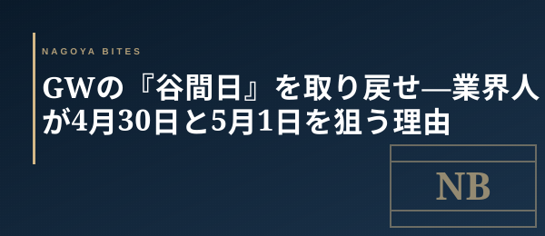

季節・イベント短信
GWの『谷間日』を取り戻せ — 業界人が4月30日と5月1日を狙う理由
2026年のGWは4/29と5/3〜5/6が祝日、間に挟まれた4/30(木)と5/1(金)は通常の平日 — いわゆる『谷間日』だ。観光客は新幹線・空港で移動中、地元客は仕事に戻っている。ホテル満室・名所大混雑の裏で、名古屋の予約困難店の予約が静かに空く2日間。業界人がこのタイミングをどう使うかを共有する。

この記事はNAGOYA BITES — 名古屋の厳選1,100店超を業界視点で紹介するグルメガイドの一部です。
なぜ『谷間日』に予約が空くのか
カレンダー上、4/29(水・昭和の日)と5/3(日・憲法記念日)〜5/6(水・振替休日)は祝日。だが間に挟まれた4/30(木)と5/1(金)は通常営業日で、有給を取らない多くのビジネスパーソンは出社する。一方、東京・大阪からの観光客は4/29に名古屋入りして5/3に帰省先・京都・伊勢へ移動する動線が中心で、谷間日は『名古屋を素通りする2日間』になる。結果、普段は2週間先まで埋まる予約困難店が、当日や前日の電話で空き席を出すという業界では知られた現象が起きる。
業界人が谷間日に動く3つの理由
① 接待・記念日の『代替日』として価値が最大化する
GW中に取れなかった本命店を、谷間日にずらす。客単価1万円〜2万円のコース店は通常2〜3週間前から満席だが、4/30と5/1は2〜3日前でも空くことがある。クライアントが地元名古屋・あるいはGW帰省で名古屋滞在中なら、混雑を避けた中日の接待は『連休中に時間を取ってもらった』という心象も含めて単価以上の価値を出す。
② カウンター席の独占率が上がる
1組30〜60分回転の鮨・割烹・カウンター鉄板は、谷間日のディナー帯に予約が1〜2組しか入らない日がある。普段なら満席で板場と会話する余裕がない店も、この日は実質的な貸切に近い状態になり、おまかせの『今日のおすすめ』を腰を据えて聴ける。同じ予算でも体験密度はピーク日の2倍と言っていい。
③ ランチタイムの予約困難店が『当日電話』で取れる
2,500〜4,500円のランチコースを出す栄・伏見の割烹は、平日昼でも普段は3日前までに埋まる。だが谷間日は周辺オフィス街の出社率が下がるため、当日11時の電話で12時半の席が取れる。GW中に名古屋を訪れている知人を案内するなら、夜の混雑を避けて昼を本命にする方が確度が高い。
動き方 — 今日の朝にやること
4/30当日の朝、本命店リスト3〜5軒に電話で空き状況を確認するだけで、夜のディナーが確定する。WEB予約フォームでは『満席』表示でも、電話だと『キャンセル分の1組なら通せる』という店は珍しくない。GW後半(5/3〜5/6)は再びピークに戻る。動くなら今日と明日 — 業界人は連休の構造を読んで、あえて『谷間』に集中する。
Inside Perspective — 業界人の目利き
- 4/30と5/1は通常の平日。観光客は移動中・地元客は出社中で、名古屋の予約困難店が一時的に空く『谷間日』になる
- 客単価1万円〜2万円のコース店も2〜3日前で空くことがある。GW中に取れなかった本命店を谷間日にずらすのが業界人の定石
- WEB予約フォームが満席表示でも、電話なら『キャンセル分の1組』が通ることがある。当日朝の電話確認が最も確度が高い